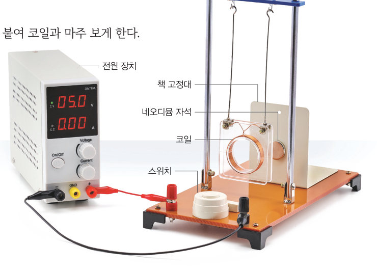
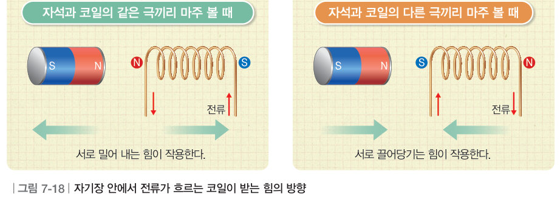
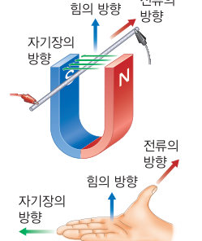
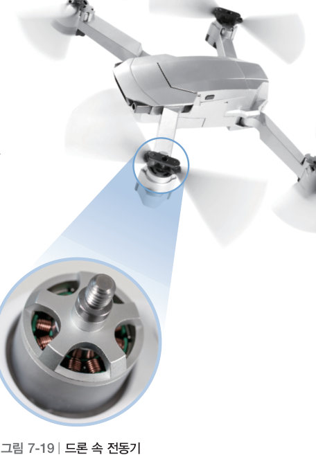
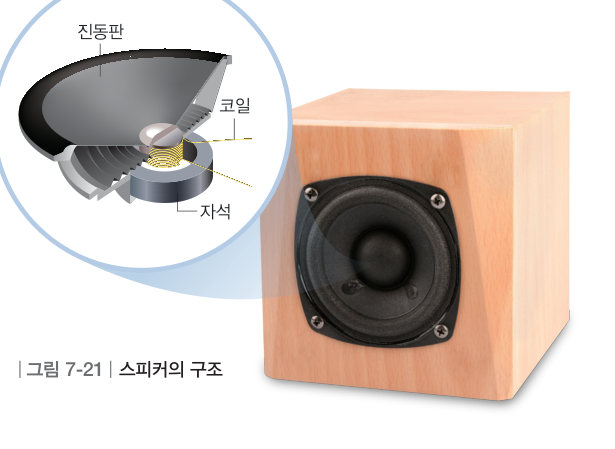

전동기가 있으면 언덕길을 수월하게 올라갈 수 있는 까닭은 무엇일까? 그네형 코일 장치로 자석과 코일 사이의 힘을 관찰하고, 가상 전동기를 돌려 보며 더 빨리 회전하게 하는 방법을 찾아보자.
🎯 이 단원을 배우면 — 자기장 안에서 전류가 흐르는 코일이 받는 힘의 특성을 설명하고, 전동기의 원리와 일상생활의 활용 예를 찾을 수 있다.
탐구 · 과학적 증거에 기반하여 주장하기자기장 안에서 전류가 흐르는 코일이 받는 힘의 특성 추리하기 256~257쪽
자석 주위에 생긴 자기장 안으로 다른 자석을 가까이 가져가면 힘을 받는 것처럼 전류가 흐르는 코일도 자기장 안에서 힘을 받는다. 다음 탐구로 자기장 안에서 전류가 흐르는 코일이 받는 힘의 특성을 추리해 보자.

256쪽① 네오디뮴 자석을 책 고정대에 붙여 코일과 마주 보게 한다. ② 그네형 코일 장치를 전원 장치에 연결한 뒤 스위치를 눌러 코일의 움직임을 관찰한다. ③ 자석을 반대로 뒤집어 붙여 자기장의 방향을 바꾼다. ④ 전류의 방향을 바꾼다. ⑤ 전류의 세기를 더 세게 한다.
⚠️ 네오디뮴 자석은 자기력이 세고 깨지기 쉬우므로 다룰 때 손을 다치지 않도록 주의한다. 전류가 흐르는 동안 코일이 연결된 부위를 만지지 않도록 주의한다.
가상 실험실그네형 코일 장치 (옆에서 본 모습)
스위치를 누르고 자석 뒤집기, 전류 방향 바꾸기, 전류 세기를 바꿔 가며 코일이 어느 쪽으로 얼마나 움직이는지 관찰하자.
전류의 세기 (과정 5)0.4 A
스위치를 눌러 보세요.
1과정 2에서 코일이 자석 쪽으로 끌려 왔다. 다음 경우 코일의 움직임은?
과정 3 — 자석을 뒤집었을 때
과정 4 — 전류의 방향을 바꾸었을 때
자석도 뒤집고 전류 방향도 바꾸었을 때
2전류의 세기를 세게 하면 코일이 움직이는 정도가 .
💬추리 및 결론 도출 자기장의 방향이 달라지거나 코일에 흐르는 전류의 방향·세기가 달라질 때 코일이 자석으로부터 받는 힘이 각각 어떻게 달라지는지 이야기해 보자.
교과서자기장 안에서 전류가 흐르는 코일이 받는 힘 257쪽
자석의 자기장 안에 놓인 코일에 전류가 흐르면 코일과 자석이 상호작용 하여 코일이 힘을 받는다. 이때 자석과 코일의 같은 극끼리 마주 볼 때에는 서로 밀어 내는 힘이 작용하고, 다른 극끼리 마주 볼 때에는 서로 끌어당기는 힘이 작용한다. 또 코일에 흐르는 전류의 세기가 셀수록 코일 주변에 생기는 자기장의 세기가 세지므로 자석과 코일 사이에 작용하는 힘의 크기도 커진다.

그림 7-18자기장 안에서 전류가 흐르는 코일이 받는 힘의 방향
더 알아보기 · 자기장 안에서 전류가 흐르는 도선이 받는 힘

자기장 안에서 전류가 흐르는 도선은 전류와 자기장의 방향에 각각 수직인 방향으로 힘을 받는다. 오른손 네 손가락을 자기장의 방향으로 펴고 엄지손가락이 전류의 방향을 가리키게 할 때, 손바닥이 향하는 방향이 힘의 방향이 된다. 말굽자석 사이에 놓은 알루미늄 포일에 전류를 흐르게 하면 포일이 움직이는 것으로 확인할 수 있다.
1펼친 오른손으로 도선이 받는 힘의 방향을 찾을 때, 각 부분이 가리키는 것은?
㉠ 손바닥이 향하는 방향
㉡ 엄지손가락
㉢ 네 손가락
교과서전동기의 원리는 무엇일까? 258쪽
드론에는 전동기가 있어 드론의 날개를 회전하게 한다. 전동기는 자기장 안에서 전류가 흐르는 코일이 받는 힘을 이용하는 대표적인 예로 자석과 코일로 구성되어 있다. 코일에 전류가 흐르면 코일에 자기장이 생겨 자석처럼 N극과 S극이 생긴다. 이때 자석과 코일의 같은 극끼리는 서로 밀어 내고, 다른 극끼리는 서로 끌어당기면서 코일이 회전한다. 코일에 흐르는 전류의 방향이 주기적으로 바뀌면서 코일은 자석으로부터 힘을 받아 계속 회전한다.

그림 7-19드론 속 전동기그림 7-20전동기의 원리
가상 전동기코일을 계속 돌게 하려면?
[전원 켜기]를 누르고 ‘전류 방향 자동 바꿈 장치(정류자)’를 켜고 꺼 보자. 전류의 세기, 자석의 세기, 코일 감은 수를 바꾸면 회전 속도가 어떻게 변할까?
전류의 세기자석 세기
코일 감은 수회전 속도: 0 회/분
전원을 켜 보세요.
1정류자를 끄면 코일은 . 코일이 계속 회전하려면 코일에 흐르는 전류의 방향이 한다.
2전동기를 더 빨리 회전하게 하는 방법을 모두 고르시오.
해 보기 · 자료 수집하기코일이 받는 힘을 활용한 예 찾기 259쪽
우리는 전동기 외에도 물체가 운동하거나 회전하는 장치를 만들 때 자기장 안에서 전류가 흐르는 코일이 받는 힘을 활용하고 있다. 스피커 안에는 고정된 자석과 진동판에 연결된 코일이 있다. 이 코일에 흐르는 전류의 방향이 바뀌어 코일이 받는 힘의 방향이 바뀌면 코일에 연결된 진동판이 진동하여 소리가 발생한다.

그림 7-21스피커의 구조
1다음 중 자기장 안에서 전류가 흐르는 코일이 받는 힘을 이용한 예를 모두 고르시오.
💬조사한 장치 하나를 골라, 그 장치 속에서 코일이 받는 힘을 어떻게 활용하는지 짧은 만화 대사처럼 설명해 보자.
스스로 확인하기256쪽 학습 목표를 달성했는지 확인해 보자 259쪽
1개념 확인 자기장 안에 놓인 코일에 흐르는 전류의 세기가 셀수록 자석과 코일 사이에 작용하는 힘의 크기는 .
2사고력 코일이 더 큰 힘을 받게 하여 더 빠르게 회전하는 전동기를 만드는 방법을 설명해 보자.
5분 테스트전류가 흐르는 코일이 받는 힘
1자석의 자기장 안에 놓인 코일에 가 흐르면 코일과 자석이 상호작용 하여 코일이 을 받는다.
✔옳으면 O, 옳지 않으면 X
② 자기장의 방향에 관계없이 도선이 받는 힘의 방향은 일정하다.
③ 도선에 흐르는 전류의 세기가 셀수록 도선이 받는 힘은 커진다.
⑨ 전동기에서 코일에 흐르는 전류의 방향은 일정하다.
4전류가 흐르는 코일 내부의 자기장이 왼쪽 방향이면 코일의 끝이 N극이 된다. 이 코일의 오른쪽에 막대자석의 N극이 코일을 향하도록 놓으면 코일과 막대자석 사이에는 서로 힘이 작용하고, 전류가 셀수록 이 힘은 .
10전류가 흐르는 도선이 자기장 속에서 힘을 받는 원리를 이용한 예를 모두 고르시오.
스스로 정리하기전류가 흐르는 코일이 받는 힘 · 세 번째 블록 찾기 260쪽
2전류가 흐르는 코일이 받는 힘
⑴ 자기장 안에 놓인 코일에 전류가 흐르면 코일이 을/를 받는다. ⑵ 코일에 흐르는 전류의 방향이 바뀌면 힘의 방향도 바뀌고, 전류의 세기가 셀수록 코일이 받는 힘이 . ⑶ 전동기: 코일과 자석의 극끼리는 밀어 내고, 다른 극끼리는 끌어당긴다. 코일에 흐르는 전류의 방향이 주기적으로 바뀌면서 코일이 계속 회전한다.
🧩 세 번째 블록 찾기 — 전동기를 더 빨리 회전하게 하려면 어떻게 해야 할까?
254쪽 조각: 코일에 흐르는 전류의 세기가 세지면 코일 주위의 자기장의 세기가 증가한다. · 259쪽 조각: 전동기 안의 코일에 전류가 흐르면 자석과 코일 사이에 서로 밀거나 당기는 힘이 작용하여 코일이 회전한다.
🧩두 블록 조각을 이어서 세 번째 블록 질문에 답해 보자.
평가 기준
스스로 평가
지식·이해 전류가 흐르는 코일과 자석의 상호작용을 이해하고, 전동기의 원리를 설명할 수 있는가?
과정·기능 자기장에서 전류가 흐르는 코일을 관찰하고, 코일이 받는 힘의 특성을 추리했는가?
가치·태도 코일이 받는 힘을 일상생활에서 유용하게 활용함을 인식했는가?
제출학생 정보 · 제출하기
모든 활동을 마친 뒤 제출하면 전체가 한 번에 채점되고 피드백이 나타나요. 답안은 선생님 스프레드시트(중2 탭)에 기록돼요.